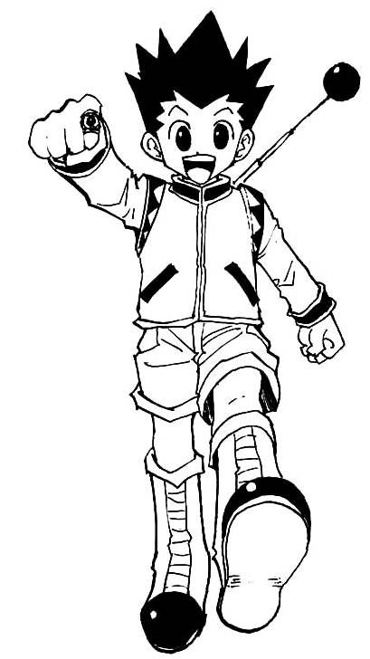

Gon Freecss é o protagonista da série de mangá e anime "Hunter x Hunter", criada por Yoshihiro Togashi.
Nascido na Ilha da Baleia, Gon é um jovem determinado e alegre que embarca em uma jornada épica para se tornar um Hunter,
seguindo os passos de seu pai ausente, Ging Freecss, que é um renomado Hunter.
